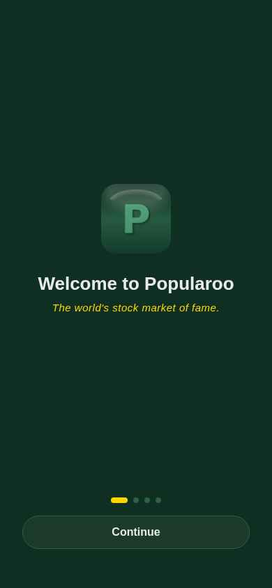
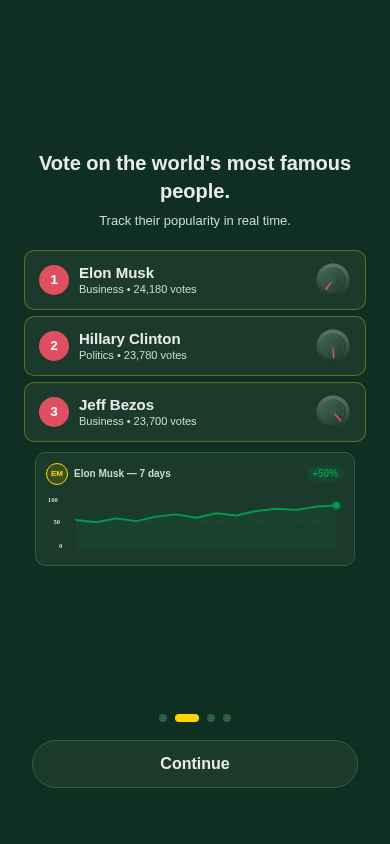
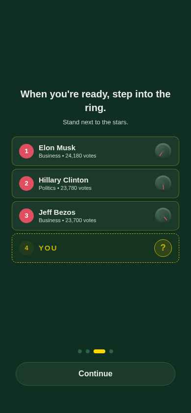
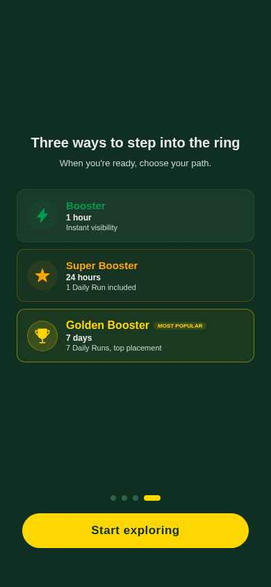

Icône Popularoo + titre + "The world's stock market of fame." en or italique

3 cartes avec bordures dorées • Jauges différenciées (#1=97%, #2=82%, #3=68%) • Graphique enrichi avec avatar, variation +50%, axes Y

3 cartes dorées + carte "YOU" pulsante (#4) avec avatar "?" doré et bordure dashed

Hiérarchie visuelle : Booster (vert) → Super Booster (orange) → Golden Booster (or + badge "MOST POPULAR") • CTA "Start exploring" en or
Les screenshots sont en anglais car l'environnement de test web utilise la locale EN. En production sur mobile, l'app affichera correctement le français (ex: "Bienvenue sur Popularoo", "Commence à explorer") grâce à la détection i18n.
Les personnalités affichées (Elon Musk, Hillary Clinton, Jeff Bezos) correspondent au fallback DEFAULT/US. En France, l'API retournera : Emmanuel Macron, Squeezie, Teddy Riner.